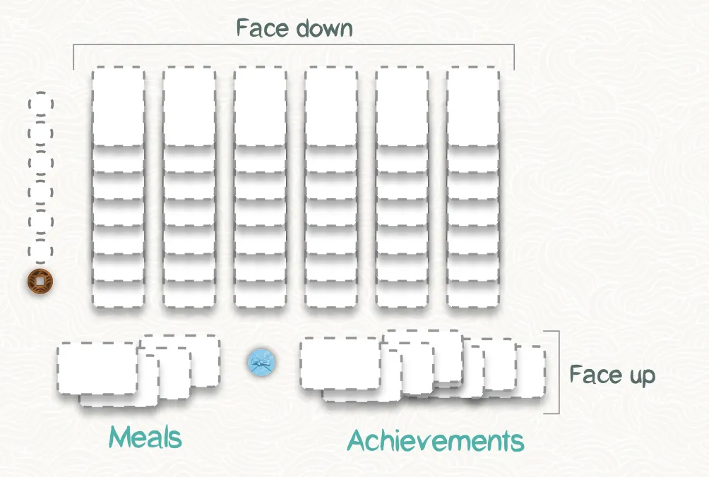
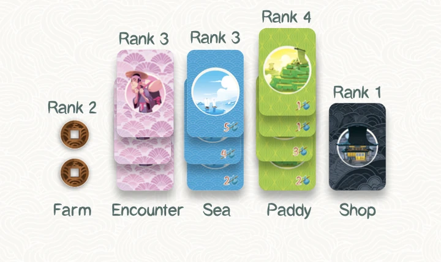
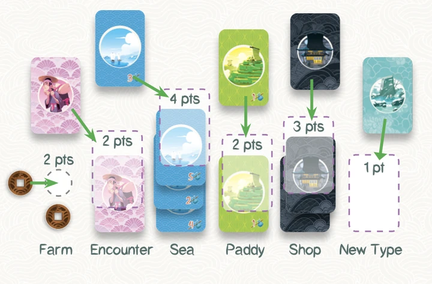
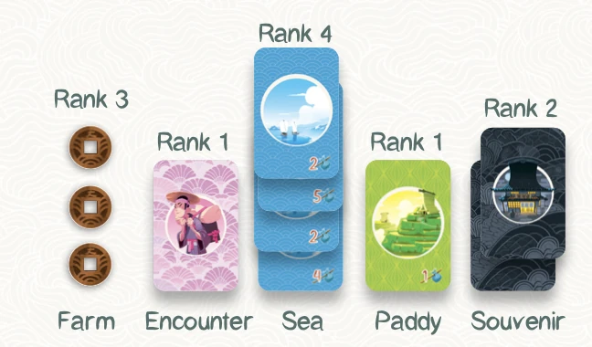
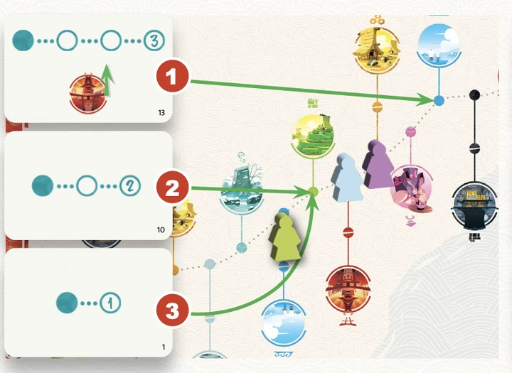
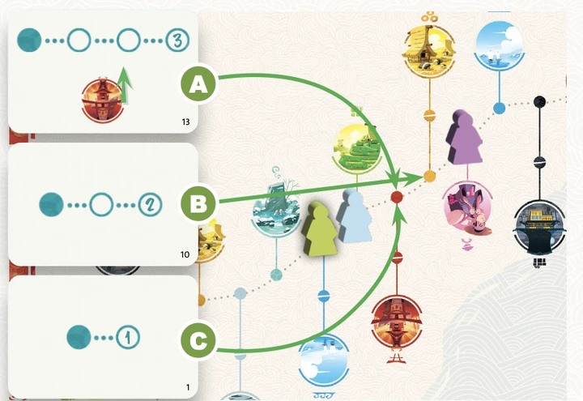

Play area layout

Items sit in face-down columns, Meals and Achievements face up.
General
- You play against 2 Automas using the 3-player setup. All other rules still apply.
- Automas never pay coins. They count as players.
Collection and ranks
- An item of a type she has goes on top of that column. A new type starts a new column to the right.
- Panoramas keep coming past the 3/4/5 limit. Ignore the printed numbers.
- Rank of a space = number of items she has of that type (can be 0).
- Temple and Inn rank below all other spaces, unless the card shows that icon (ramen bowl = Inn, torii = Temple). Then that space ranks highest.
Example: ranks
An Automa’s collection along with the ranks of the spaces. All item types not shown have rank 0.

Example: placing an item
The diagram below shows where to place a received item based on its type, and how many points it would score. The rightmost column is where a card of a type not already in the collection would be placed, thus starting a new column for that card type (and only that type):

Automa turn
- Draw a card and place it face up on the discard pile.
- Range: the number on the card (1–3) is the most unoccupied spaces she will move. Occupied spaces are ignored.
- Move to the highest-ranked space in range. On a tie, take the nearest.
- Resolve it:
- Temple: she places 2 coins from the reserve and scores 2 points.
- Inn: no Meal until all 3 Travelers have arrived.
- Anything else: she gets 1 item of that type (a Farm gives 1 coin, not 3) and scores 1 point per item of that type she now has. No normal benefit.
Example: Automa moves
This Automa plays as the green Traveler and has this collection:

Below are examples of how the Automa would move in 6 different situations:

1 The range is 3. Therefore, you check the next 3 unoccupied spaces, which are Paddy, Encounter, and Sea. Since there’s no unoccupied Temple space within range, the Temple icon makes no difference.
The highest ranked of the 3 spaces is the Sea Panorama space (rank 4). So, you move the Automa’s Traveler there and give her a Sea Panorama card. She’s the first to have 5 Sea Panorama cards, so you give her the Sea Panorama Achievement. Finally, she scores 8 points: 5 points because it’s her 5th card of that type and 3 points for the achievement.
2 On this card, the range 2 is too short to reach the Sea Panorama. The 2 spaces within range both have rank 1, so you move her Traveler to the closest of those, the Paddy. You give her a Paddy Panorama card and she scores 2 points because she now has 2 Paddy Panorama cards.
3 The range 1 means that only the next empty space is within range, the Paddy space. So, you move her Traveler there and give her a Paddy Panorama card. She scores 2 points because she now has 2 Paddy Panorama cards.

A The Temple-up icon means that Temple spaces have the highest rank this turn. Since there’s an unoccupied Temple space within range, you move her Traveler there and place 2 coins from the reserve in her Temple area for which she scores 2 points.
B There’s no Temple icon on this card, so the Temple has a lower rank than all other spaces. Therefore, the only other space within range, the Farm, is chosen. You move her Traveler there and give her 1 coin. She scores 4 points because she now has 4 coins.
C Only 1 space, the Temple, is within range, so you move her Traveler there. You place 2 coins from the reserve in her Temple area. She scores 2 points.
Your turns
Play normally, but Meal cards stay hidden until everyone is at an Inn.
Inns
- At intermediate Inns, shuffle all Automa cards into a new deck (use the reshuffle button).
- Draw 4 Meal cards and keep the order drawn.
- Buy in arrival order. Each Automa takes the cheapest available (first drawn on ties), pays nothing, and scores 6 points. Duplicate Meal types are allowed.
End of the journey
Handled as normal. For the Collector achievement, each Souvenir an Automa has counts as 2.
Difficulty levels
- Level 1/2/3 (you): draw 5/3/1 difficulty cards and resolve each as if you stopped on that space, without moving.
- Level 4: default, no change.
- Level 5/6/7 (each Automa): she draws 1/3/5 difficulty cards, resolved as if she stopped there, without moving.
Crossroads
- Use 3 cards of each added type (random for Amulets, Legendary Objects, Calligraphy). Each Automa scores 5 extra points.
- “Rare and precious” can’t be used. “Good luck” applies only to you.
Matsuri
- Remove travelers Kushinada, Misaki*, Musubi and Takeru*. (* usable but stronger in solo.)
- When an Automa picks a Matsuri, put the top Matsuri card into play. Check the Automa Matsuri sheet when one triggers.
Promos
Antoine, Eriku, Naïade and New Encounters work unchanged. Felicia can’t be used.